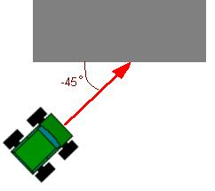

Переменные
Есть 2 типа данных:
- Указатели - в них хранится адрес объекта (танк, дерево, строение, и т.д.)
- Числа - в них хранится какое-либо число, может принимать как целые, так и дробные значения.
Правила объявления переменных:
- Указатели : var_name%
- Числа : var_name#
При первом объявлении переменной следует указать ее тип.
По умолчанию тип является числовым. Т.е. строки
var_name = value
var_name# = value
абсолютно идентичны.
Указывать тип переменной можно только один раз, далее ее тип будет определяться автоматически :
entity% = ScanRadar ( 1000 )
If entity<>Enemy
...
End If
Операторы
- Оператор присваивания: "="
var_name = value
- Арифметические операторы: "+", "-", "/", "*", "Mod" ;
var_name = value1 + value2 * ( value3 / value4 )
- Условные операторы: "<", ">", "=", "<=", ">=", "<>", "And", "Or", "Not", "Xor" ;
Приоритет операторов :
| Операторы | Приоритет |
| Not, унарный минус | Самый высокий |
| And, Or, Xor | - |
| *, / | - |
| +, - | - |
| =, <, >, <=, >=, <> | Самый низкий |
Условия
Синтаксис:
|
Вариант №1
| Вариант №2 |
If …
…
[Else]
[…]
EndIf
|
If …
…
[Else]
[…]
End If
|
Возможна запись в одну строчку:
If … … [Else … ] EndIf
Пример :
If a>b MaxValue=a Else MaxValue=b EndIf
Функции
Работа с радаром :
- ScanRadar ( angle ) - просканировать пространство в заданном направлении.
- PointRadar ( entity ) - направляет радар на объект.
Работа с объектами :
- EntityX ( entity ), EntityY ( entity ), EntityZ ( entity ) - возвращает соответствующие координаты объекта в пространстве.
- EntityPitch ( entity ), EntityYaw ( entity ), EntityRoll ( entity ) - возвращает соответствующие углы объекта в пространстве.
- EntityVisible ( dest_entity ) - определяет видим ли объект ботом.
- EntityDistance ( src_entity, dest_entity ) - возвращает расстояние между объектами.
- DeltaYaw ( src_entity, dest_entity ) - угол, на который надо повернуть объект по оси OY, чтобы направить его на цель.
- DeltaPitch ( src_entity, dest_entity ) - угол, на который надо повернуть объект по оси OX, чтобы направить его на цель.
- PositionPivot ( x#,y#,z# ) - Помещает виртуальный объект Pivot по указанным координатам
Работа с коллизиями (столкновениями) :
- CollisionX ( entity ), CollisionY ( entity ), CollisionZ ( entity ) - возвращает соответствующую координату последнего места столкновения объекта.
- CollisionNX ( entity ), CollisionNY ( entity ), CollisionNZ ( entity ) - возвращает соответствующую компоненту нормали последнего места столкновения объекта.
Математика :
- Abs ( x ) - возвращает модуль числа.
- Sqr ( x ) - возвращает квадратный корень их числа.
- Sqn ( x ) - возвращает знак числа.
- Min ( x, y ) - возвращает минимальное число.
- Max ( x, y ) - возвращает максимальное число.
- Sin ( x ) - возвращает синус угла.
- Cos ( x ) - возвращает косинус угла.
- ASin ( x ) - возвращает арксинус числа.
- ACos ( x ) - возвращает арккосинус числа.
- Rnd ( x, y ) - возвращает случайное дробное число.
- Rand ( x, y ) - возвращает случайное целое число.
- ATan2 ( x, y ) - возвращает арктангенс чисел.
- где y,x - любые числа
Функция возвращает "направление" на точку (х,у)
из центра координат (0,0). Направление возвращается
в виде угла от оси Х.
Эта функция крайне полезна, когда есть два
обьекта и нужно повернуть один к другому.
ATan2(y2-y1,x2-x1) выдаст правильную ориентацию для обьекта1,
чтобы он был направлен на обьект2.
Функция возвращает значения направлений в градусах,
от -180 до +180.
Кроме того, обратите внимание: значения, возвращаемые
ATan2(y,x) и ATan2(x,y) будут отличаться на 360 градусов.
Встроенные переменные
Переменные, устанавливаемые функцией ScanRadar
- Frend - указатель на союзника (при командной игре), попавшего в сектор сканирования.
- Enemy - указатель на врага, попавшего в сектор сканирования.
- BulletBonus - указатель на бонус снарядов, попавшего в сектор сканирования.
- RocketBonus - указатель на бонус ракеты, попавшего в сектор сканирования.
- RepairBonus - указатель на бонус ремонта, попавшего в сектор сканирования.
- Obstacle - расстояние до препятствия, попавшего в сектор сканирования.
- ObsAngle - угол с препятствием, попавшим в сектор сканирования (см. рисунок).

Жизни, снаряды, ракеты
- MyLives - жизни своего бота.
- Bullets - количество оставшихся снарядов.
- Rockets - количество оставшихся ракет.
Тип игры, количество ботов, и еще одна фишка
- TypeGame - тип игры : 1 - каждый сам за себя; 2 - командный бой.
- HowManyBots - количество ботов в игре.
- DamageYaw - индикатор повреждения, содержит угол попавшего снаряда (относительно корпуса бота), если не было повреждения - 0.
Управление своим ботом
- TurnCorpus - указывает направление поворота корпуса танка : +1 - налево, +0.5 - на половину угла поворота налево, -1 - направо.
- TurnGun - указывает направление поднятия/опускания ствола. +1 - вверх, +0.5 - на половину угла вверх, -1 - вниз.
- TurnTurret - указывает направление поворота башни : +1 - налево, +0.5 - на половину угла поворота налево, -1 - направо.
- Move - указывает ускорение движения : +1-полный вперед, 0 - стоять, -1 - полный назад.
- Fire1 - указывает на команду запуска снаряда : 1 - огонь, 0 - не стрелять.
- Fire2 - указывает на команду запуска ракеты : 1 - огонь, 0 - не стрелять.
Обработка столкновений
- Collided - указатель на бота, с которым произошло столкновение.
- CollidedObstacle - указатель на препятствие, с которым произошло столкновение.
Указатели на модели
- Radar - указатель на радар.
- Turret - указатель на башню.
- Gun - указатель на ствол.
- Corpus - указатель на корпус танка.
- Center - указатель на геометрический центр территории.
- Pivot - указатель на вспомогательный виртуальный объект.
Работа со стволом
- GunPitch - угол поворота ствола по оси X.
Работа с башней
- TurretYaw - угол поворота башни по оси Y.
Работа с корпусом танка
- CorpusX - координата корпуса танка по оси X.
- CorpusY - координата корпуса танка по оси Y.
- CorpusZ - координата корпуса танка по оси Z.
- CorpusPitch - угол корпуса танка по оси X.
- CorpusYaw - угол корпуса танка по оси Y.
- CorpusRoll - угол корпуса танка по оси Z.